Transaction evidence — every state, its screenshot, its proof
Every state a gastify transaction can reach, and what proves it: click any state in any of the three drawings and its production screenshot opens with the spec, code, models and cases behind it.
the handleThe diagram is the index; the screenshot is the evidence.
One state model drives all three drawings — click any state anywhere and its evidence opens below.
a · belt-lanes — the lifecycle as a line
The payload changes identity at every station; three rows, six gates deciding beside the belt.
b · hub-orbit — saved is home
Every episode leaves the detail and comes back to it; the orbit says so before any label is read.
c · gate-first — grouped by what stops you
The ramifications view: each panel is a guard, holding the states it can refuse.
Nothing refuses you here — failure degrades, never blocks.
Shared numbers stay honest — one lock refuses the whole batch.
Reconciled periods cannot shift under the user.
Both exits ask first; only one was ever photographed.
The gate that fires by itself as the calendar moves — and its only bypass is a legal right. Entirely unphotographed.
Every row above also sits behind this one — C704 proved a batch cannot reach a neighbour's rows.
Answer with a letter — the winner becomes the Evidence tab's left side; the runners-up get stored.
scanning — the CL supermarket run, live on production
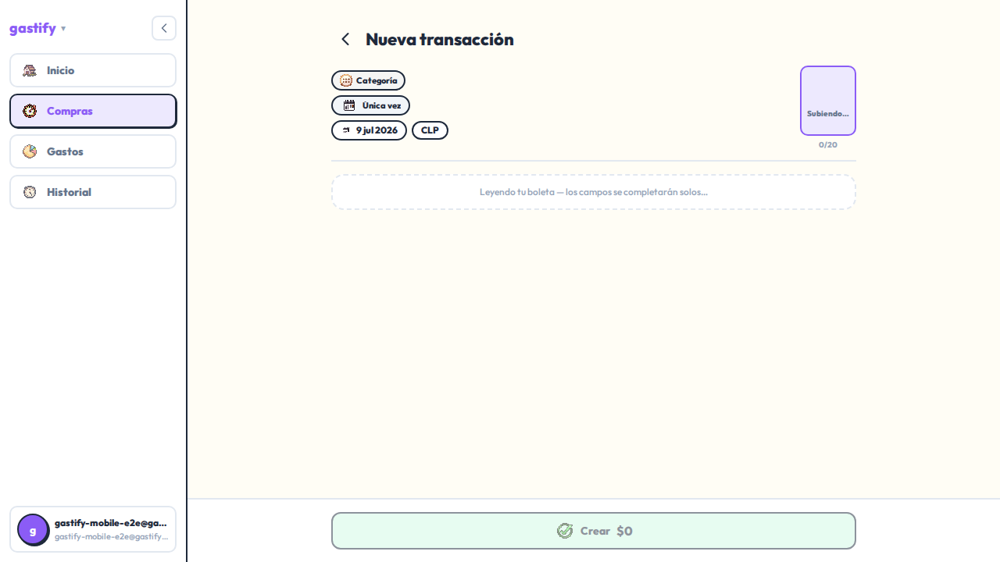
The slot reads the receipt over SSE; three country runs (CL · US · FR) walked this on production, 5/5 passed.
- captured
- 2026-07-09 · recorded runs vs production (e5a5961)
- spec
- tests/web-e2e/_tx2b-live-capture.spec.ts
- code
- web scan slot (SSE) · POST /api/v1/transactions
- models
- TransactionDraft
- role
- principal
degrade → manual — the fallback is a first-class flow
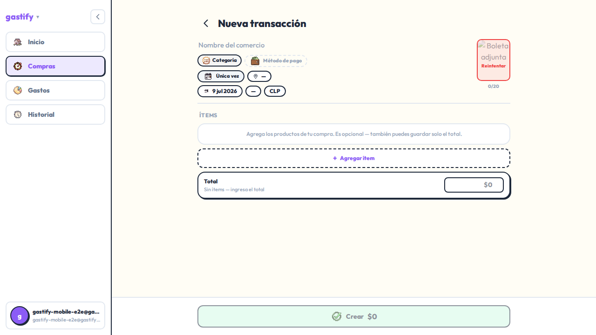
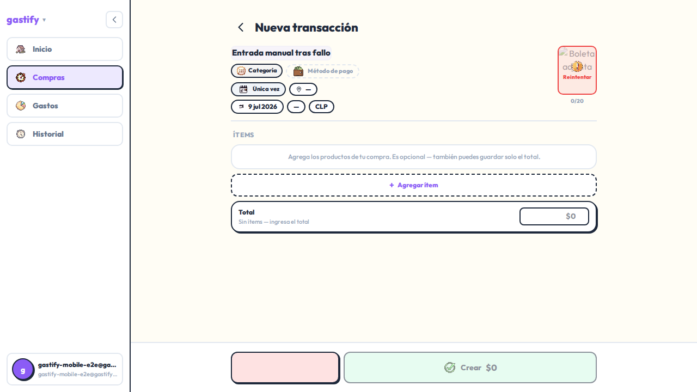
A failed scan lands the user in the SAME surface as manual entry (D111) — the degrade leg photographed both frames.
- captured
- 2026-07-09 · degrade leg, 2 shots
- spec
- tests/web-e2e/_tx2b-live-capture.spec.ts
- role
- principal (failure path)
draft — AI-populated, nothing persisted yet
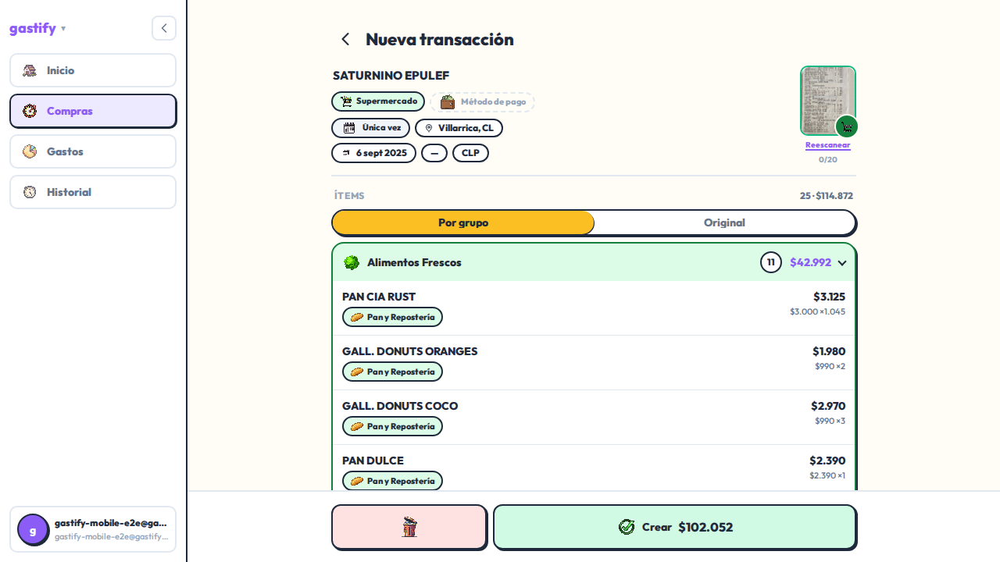
Items, totals, merchant proposed for review; the row does not exist until Guardar.
- captured
- 2026-07-09 · vs production
- spec
- tests/web-e2e/_tx2b-live-capture.spec.ts
- models
- TransactionDraft
draft resumed — reload survives
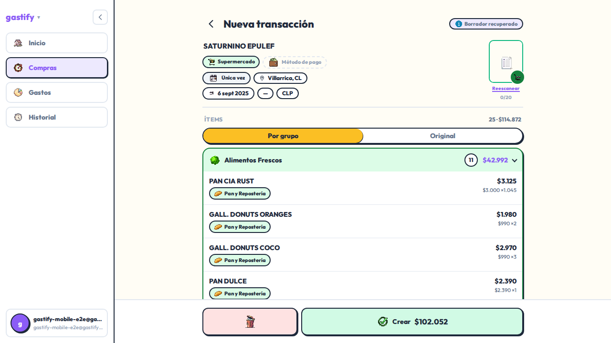
Mid-review reload brings the draft back — the persistence proof behind TX2b's one-surface bet.
- captured
- 2026-07-09 · persistence leg 04
- spec
- tests/web-e2e/_tx2b-live-capture.spec.ts
discarded — a named absence
- code
- DELETE /api/v1/transactions/{id} (from ScanResult)
- cases
- — none walk the discard UI —
saved — the steady state, on its detail
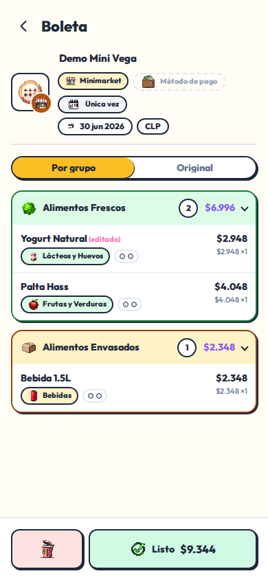
The reference⟷live fidelity set's mobile detail — the surface every episode returns to.
- captured
- 2026-07-08/09 · fidelity set
- spec
- tests/web-e2e/tx1-detail-reskin.spec.ts
- code
- GET /api/v1/transactions/{id}
- models
- Transaction · TransactionItem · TransactionImage · TransactionItemFlag · TransactionDraft
- role
- reference
edited — asserted, never photographed
- code
- PATCH /api/v1/transactions/{id}
- cases
- update suite · C702
item flagged — margin notes that survive locks
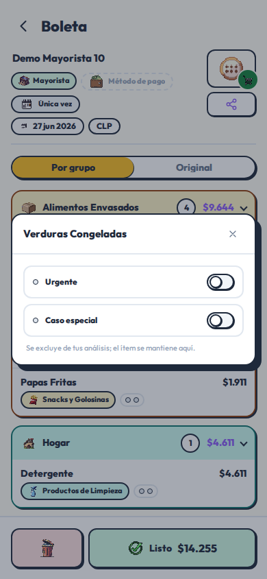
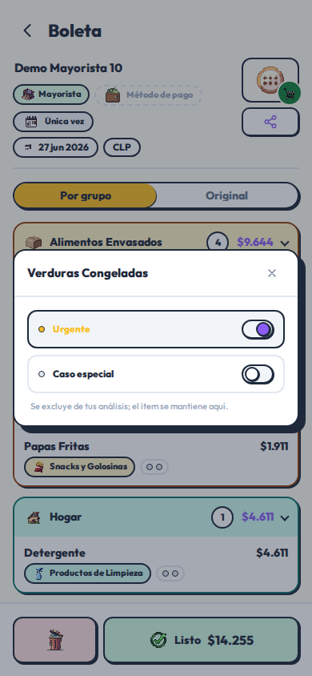
Toggled live on production, then reverted — the seed ended unchanged.
- captured
- 2026-07-22 · live capture (user B, es-CL, mobile-390)
- spec
- tests/web-e2e/_txflows-live-capture.spec.ts
- models
- TransactionItemFlag
- cases
- C1066 (RLS migration)
- role
- edge
locked · matched — the P117 popup
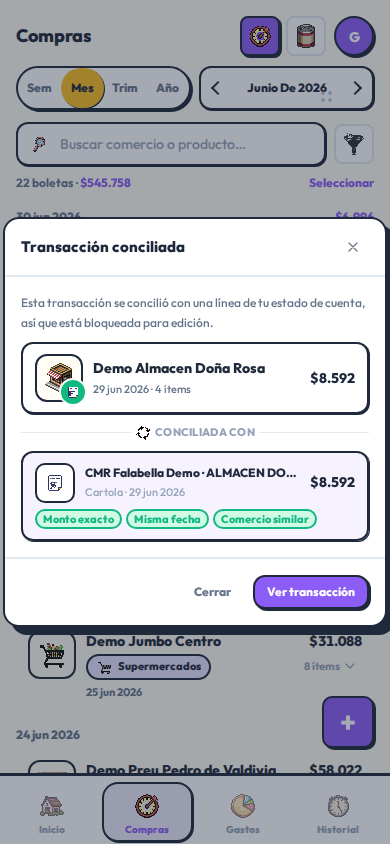
"Transacción conciliada" — the row is reconciled against a cartola and refuses edits until released.
- captured
- 2026-07-22 · live capture on production
- spec
- tests/web-e2e/_txflows-live-capture.spec.ts
- code
- PATCH → 409 (P117) · _is_statement_matched
locked surface — read-only, flags exempt
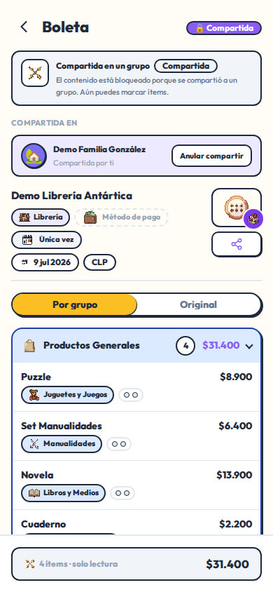
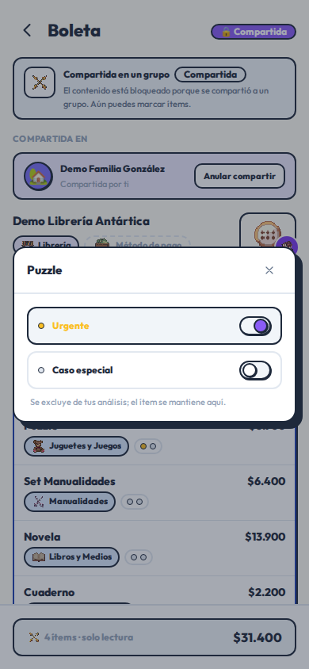
Edit affordances gone; the flag still writes — the lock protects shared numbers, not your own margin notes.
- captured
- 2026-07-22 · legs 05 + 06
- spec
- tests/web-e2e/_txflows-live-capture.spec.ts
delete · confirm — it asks first
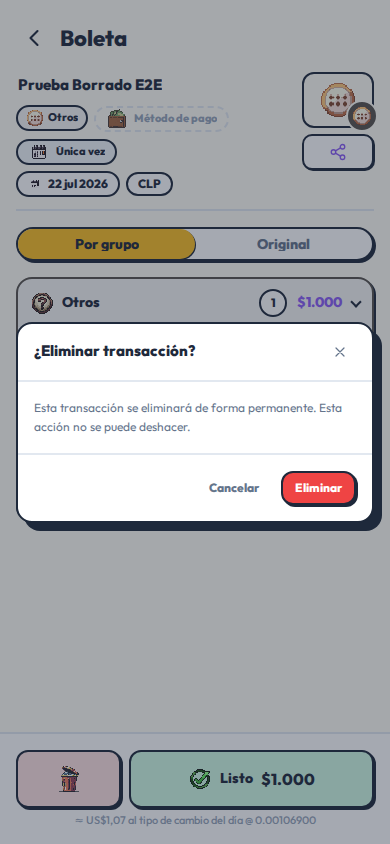
The capture created its own victim, so the seed ended unchanged.
- captured
- 2026-07-22 · live capture on production
- spec
- tests/web-e2e/_txflows-live-capture.spec.ts
- code
- DELETE /api/v1/transactions/{id} · delete_transaction
- cases
- C1067
deleted — the list says so
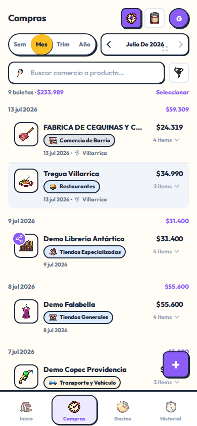
The row is gone and the list shrank by one.
- captured
- 2026-07-22 · leg 08
- cases
- C1067
batch deleted — all-or-nothing, api only
- code
- POST /api/v1/transactions/batch-delete
- cases
- C1072 · C704
sealed · 409 — the gate time fires
- code
- _assert_within_delete_window (UX-11)
- cases
- — none —
DSR erasure — the legal door past every gate
- code
- consent.py bulk erasure path
- cases
- — none —
source: docs/prisms/evidence-states/body.html — authored HTML is the source of truth; this page is generated by build_prisms.py and is never hand-edited. 3 floor(s). proof manifests tx2b-journey · tx1-detail-reskin · txflows-journey; backend/app/api/transactions.py + models as read 2026-08-04; counts recountable from those files.